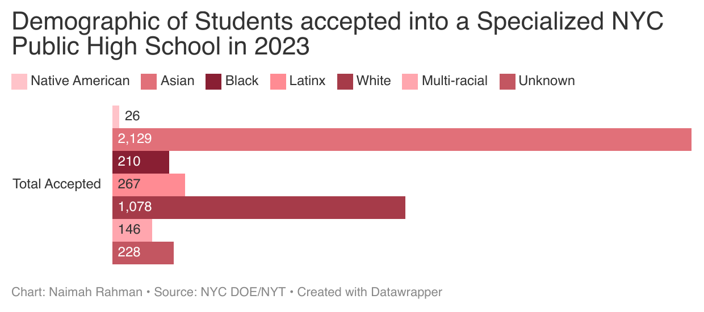
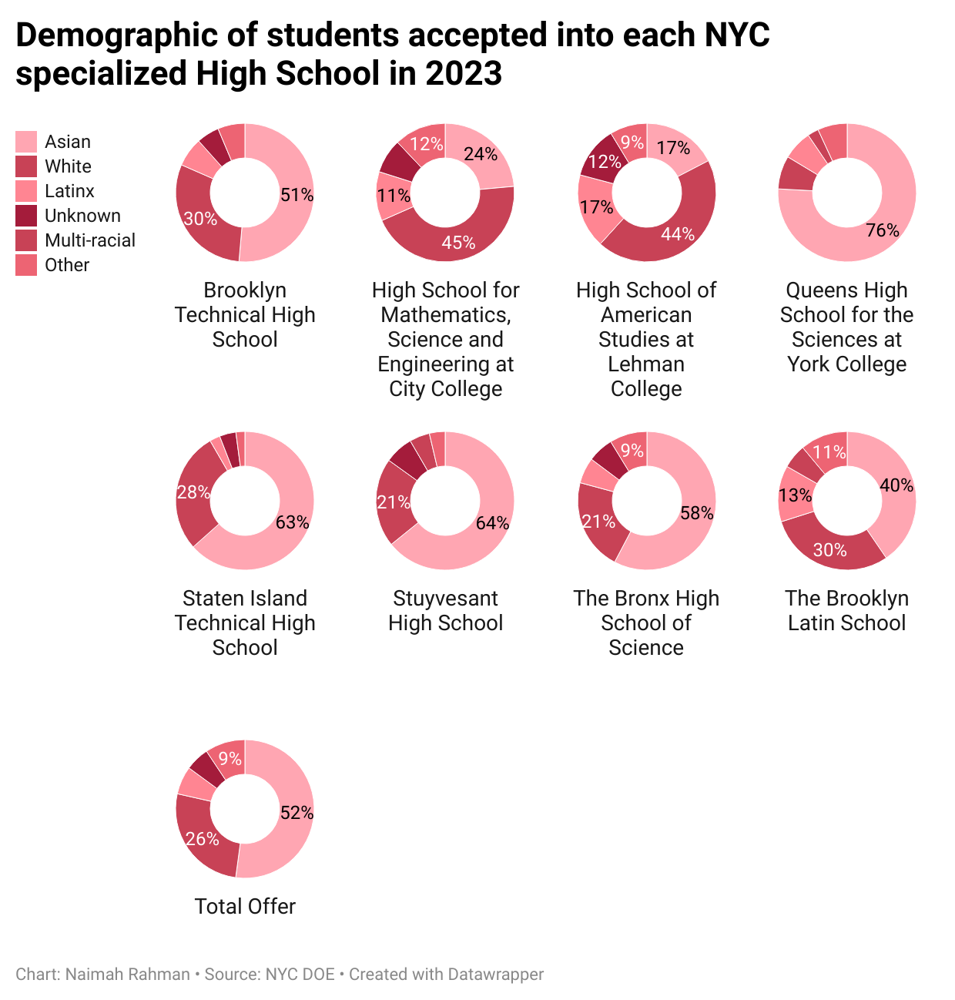
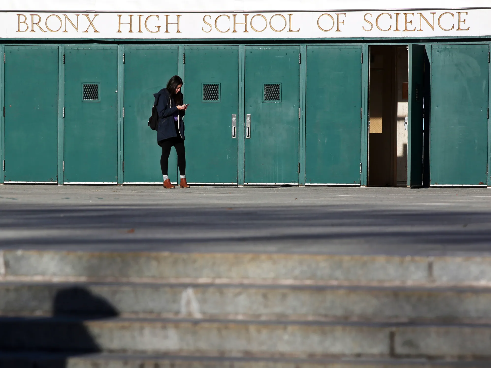

As a New York native, I often hear people say they would never raise their kids in the city. That the idea of carrying strollers up the subway is too hard or that your kids simply need to have a backyard with a picket fence and a good school district. What these people dont realize is just how truly unique it is to grow up in NYC.
Lets focus on the New York City public high school administration process. Eighth-grade students in NYC apply to high schools like twelfth-graders apply to college. Replace the SAT with the SHSAT and the common app with the NYC DOE webpage, and the process is uncanny. The same anxiety fills 13-year-olds and 17-year-olds with the reward being the opportunity to be educated in their dream schools.
The SHSAT is the Specialized High Schools Admissions Test, offered to all NYC residents in the eighth or ninth grade. This test gives students the opportunity to test into these 8 specialized high schools:
- Bronx High School of Science
- Brooklyn Latin School
- Brooklyn Technical High School
- High School for Math, Science and Engineering at City College
- High School of American Studies at Lehman College
- Queens High School for the Sciences at York College
- Staten Island Technical High School
- Stuyvesant High School
The Princeton Review describes these high schools as “selective public schools for students who excel artistically and academically.” These schools are meant to cultivate a learning environment for gifted students. The opportunity to study at one of these schools is seen as an honor for many NYC families. However, it is a select few that get to enjoy the benefits of attending. When examining the racial demographics of those offered seats in these select schools, the results become jarring.
New York City has long been considered one of the most segregated school systems in the United States. Demographics of each of these specialized high schools have been showing these patterns for years. The 2023 results show no fluke in the system. The cause for these results can be credited to a number of reasons. NYC is home to the largest public school system in the U.S, with over 1 million students enrolled in the public education system. Many credit the segregation within schools to be a result of homogeneous neighborhoods in the city. This results in students attending schools that are in and around their neighborhoods, which will then reflect the neighborhood they grew up in. The first demonstrates the results from the 2023 acceptances while the secon data set demonstrates how this distributes into the schools themselves.When speaking with high school English Language Arts teacher Shabiha Rahman, she talked about the diversity in secondary schools and how it is a crucial part of education.
The Bronx School of Science. Source: The New Yorker'For me, the ELA classroom has always been the space to introduce students to new voices and perspectives. Novels, poetry, documentaries, and informational texts are tools to facilitate conversations where teachers can lead their students into understanding the reality of the world and create empathetic thinkers.'
She continues to talk about her experience teaching to a predominately white study body.
“When students read about characters outside the White canon, it is no shock when they begin to piece together the harsh reality of this world and become ready to enact change. However, there is also a responsibility on ELA teachers' specificity to be well informed on the voices they are presenting to class and the history of those characters and their backgrounds. It requires an interdisciplinary approach where social studies and ELA meet to emphasize the voices of non White stories. For example, you cannot teach a novel like The Hate You Give without going through the history of violence against Black bodies and addressing current events. When I taught at high school with 90% White students in an affluent district, I came to realize that these conversations are not happening in their homes as their community only reflects people like them. So it was my responsibility to truly expose them to voices outside their own.”
It is evident that diversity within the public education system in NYC is a prevailing epidemic. Former Mayor Bill de Balsio sought to tackle this issue while running for mayor in 2013 by integrating specialized high schools with more diverse populations through the elimination of the SHSAT and creating a holistic review to the high school application process.
Mr de Blasio failed to deliver on his campaign promises during his time as mayor and the current NYC mayor, Eric Adams, has yet to make a public statement on the segregation of NYC public schools.
Mr de Blasio goes on record in an op-ed for Chalkbeat, saying the following 'Can anyone look the parent of a Latino or black child in the eye and tell them their precious daughter or son has an equal chance to get into one of their citys best high schools? Can anyone say this is the America we signed up for?'
There are currently no systems in place within the NYC DOE to tackle this issue. The future of New York begins with the education it provides to students, and the racial demographics have not gotten any better as the years go on.